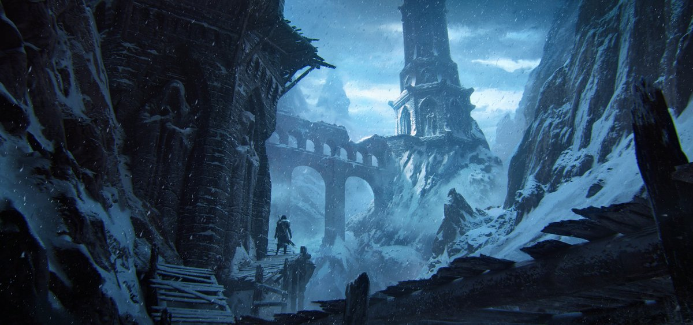
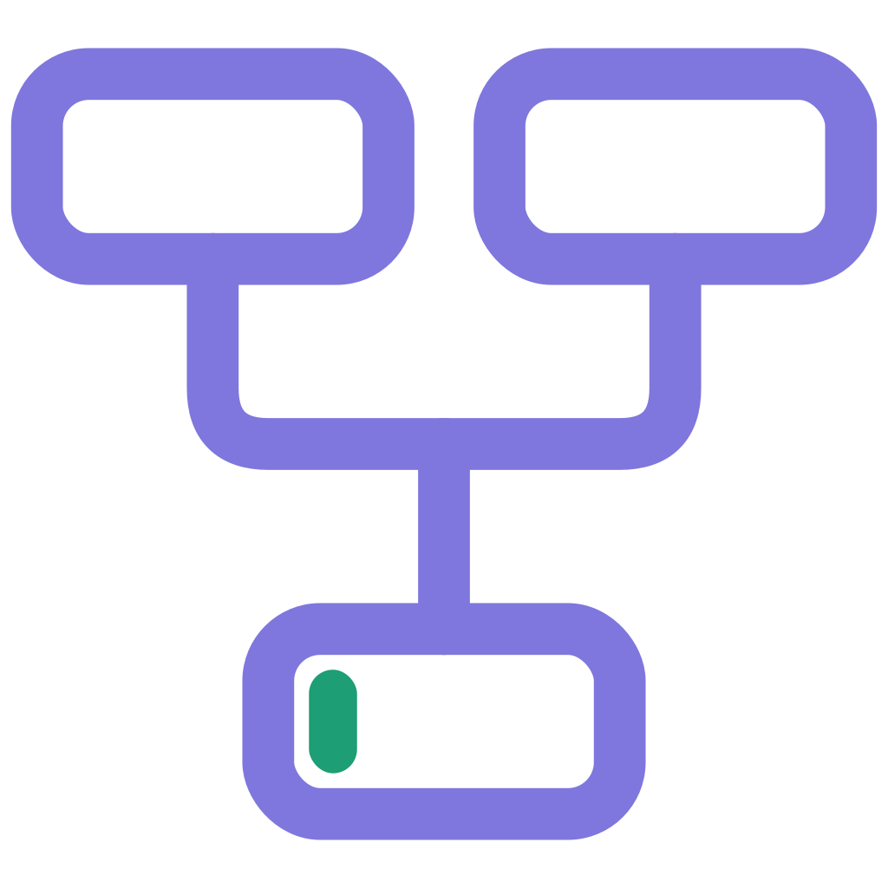

Eric Hallquist氏の作品「Tower of the Exiled Magi」（毎日作品分析Day3）。構図だけでなく建物のデザインも優れているという気づきが記されている。
URL
https://www.artstation.com/artwork/vbGyWO

Merge VFX&CGCG / VFX KNOWLEDGE BASE
Eric Hallquist氏の作品「Tower of the Exiled Magi」（毎日作品分析Day3）。構図だけでなく建物のデザインも優れているという気づきが記されている。